click oriunde sau Esc pentru a închide
Glicogenul este o polizaharidă de rezervă specifică organismului uman și animal, o macromoleculă uriașă formată din mii de molecule de glucoză legate între ele.
Are același rol pe care îl are amidonul în lumea plantelor: este forma în care celula depozitează energie și din care extrage rapid glucoză atunci când are nevoie. De aici și numele de „amidon animal”.
Glucidă complexă, polizaharidă de rezervă
α-D-glucoza (C₆H₁₂O₆)
În ficat și mușchi, la om și animale
Întreaga macromoleculă este construită din repetarea unei singure cărămizi: molecula de α-D-glucoză, o aldohexoză cu formula C₆H₁₂O₆.
La unirea a două unități se elimină o moleculă de apă, deci unitatea care se repetă are formula C₆H₁₀O₅, iar macromolecula are formula generală:
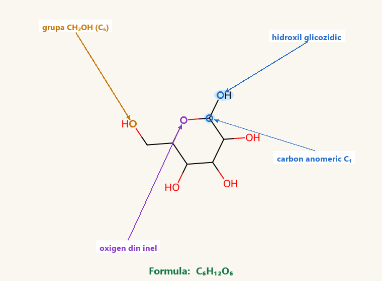
Două molecule de glucoză se apropie și se unesc eliminând o moleculă de apă (condensare). Există două variante, în funcție de ce hidroxil reacționează:
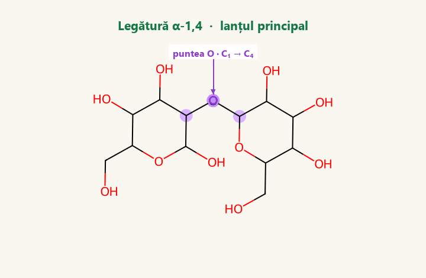
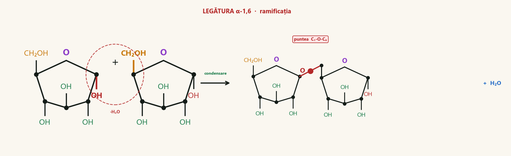
Multe capete libere, deci glucoza se eliberează foarte rapid.
Moleculă aproape sferică, mult „combustibil” în spațiu mic.
Se dispersează în apă fără a perturba presiunea osmotică a celulei.
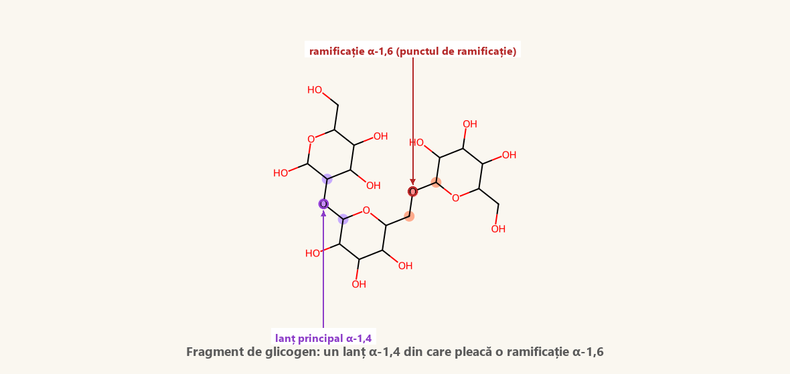
Da: fiecare ramură se ramifică din nou, iar acele ramuri se ramifică iar, la fiecare 8–12 unități. Nu chiar „la infinit”, ci se repetă cam 12 niveluri, până molecula devine o sferă plină (de până la ~55.000 de glucoze).
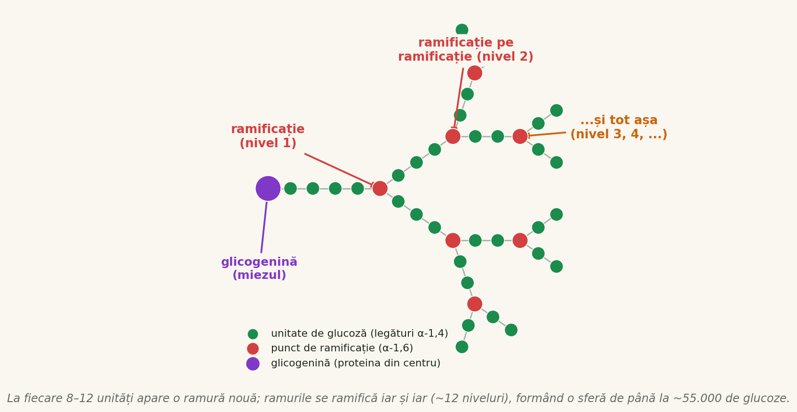
Pulbere albă, fără formă cristalină definită.
Deși este construit integral din glucoză.
Colorație brun-roșcată (amidonul dă albastru-intens).
Formează dispersii coloidale în apă caldă. În continuare urmează reacțiile chimice reale, scrise cu ecuații.
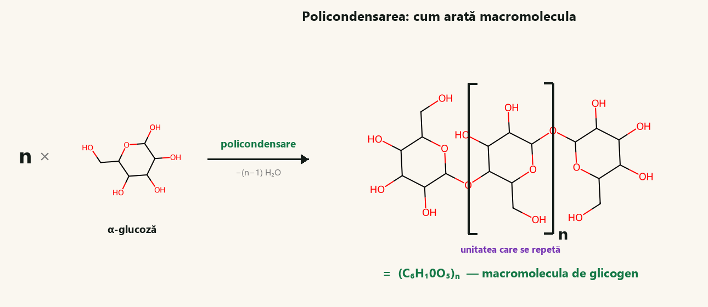
În forma deschisă, glucoza are o grupă aldehidă –CHO care se oxidează ușor la grupă carboxil –COOH (acid gluconic). Uite cum se schimbă molecula la propriu:
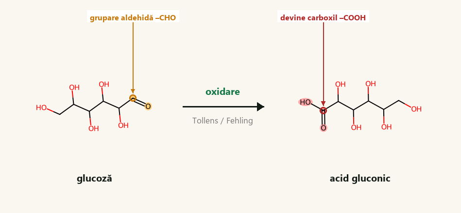
Se depune argint metalic → oglindă de argint.
Apare un precipitat roșu-cărămiziu de Cu₂O.
Glucoza din glicogen este arsă complet cu oxigenul respirat — fiecare atom se oxidează (≈ 2870 kJ pentru fiecare mol):
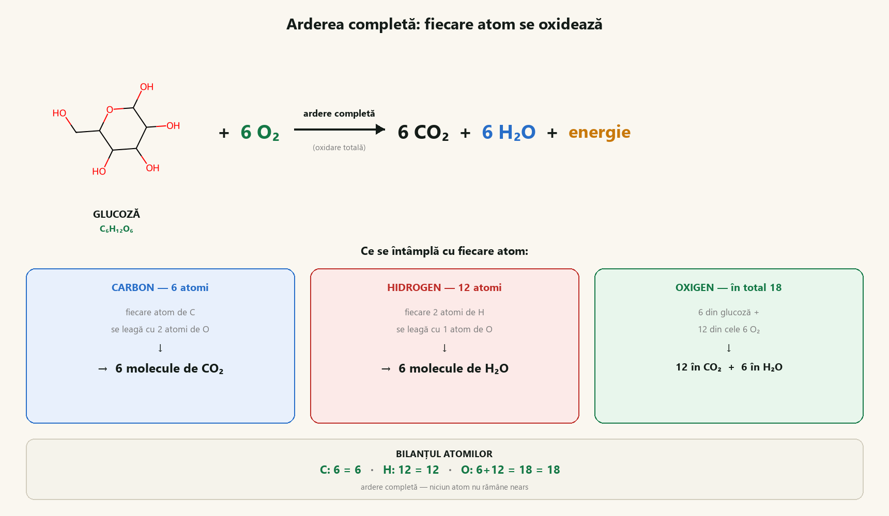
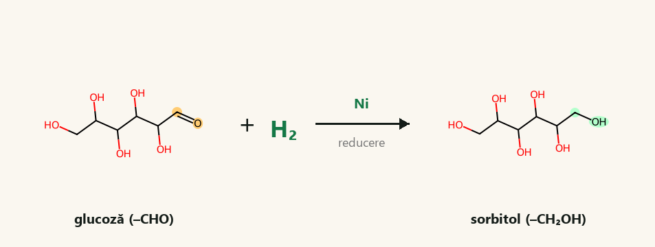
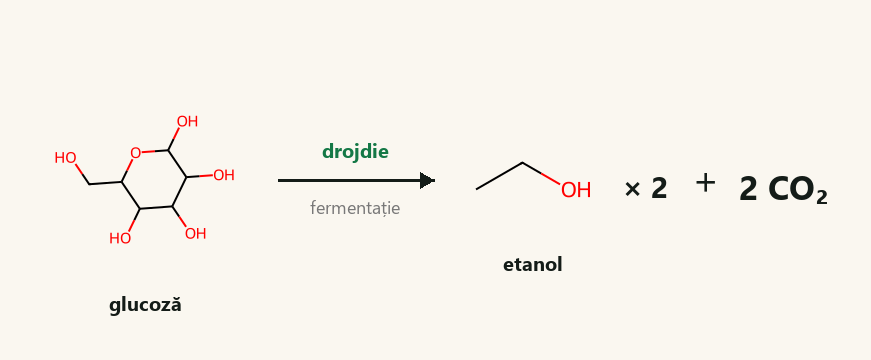
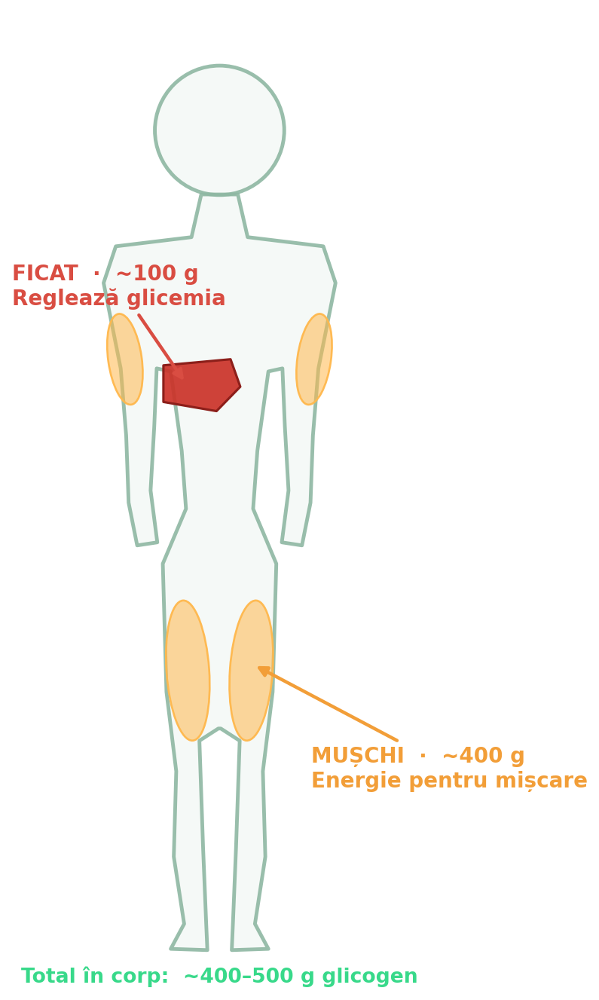
Este „rezervorul comun”. Când nu mănânci (între mese, noaptea), ficatul descompune glicogenul și trimite glucoză în sânge pentru tot corpul, mai ales pentru creier.
Este „rezervorul personal” al fiecărui mușchi. Nu iese în sânge: îl folosește doar mușchiul respectiv, ca să se contracte când te miști.
În total, corpul tău depozitează cam 500 g de glicogen (ficat + mușchi) — adică energie pentru aproape o zi întreagă de mișcare.
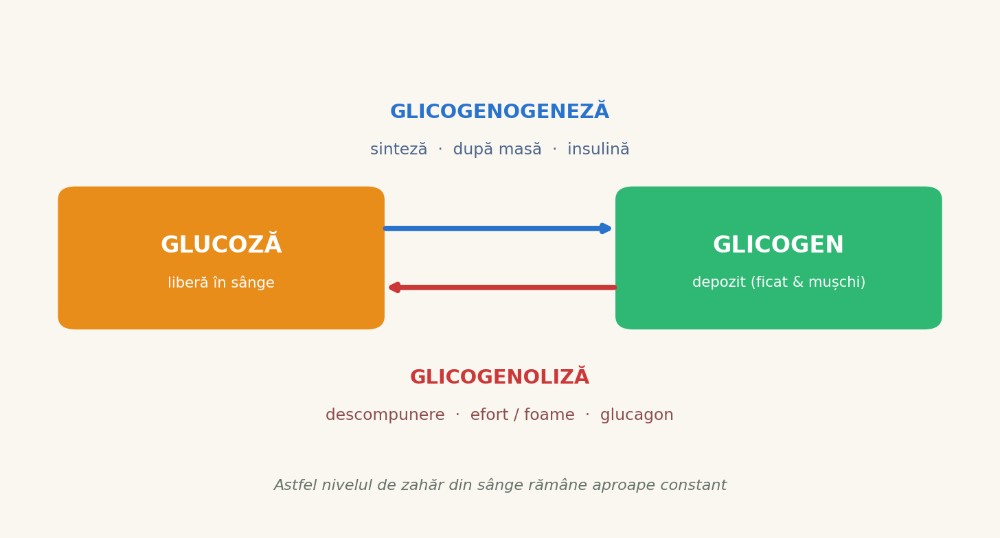
Sinteza glicogenului din glucoză, când glicemia crește (după masă). Stimulată de insulină.
Descompunere cu eliberare de glucoză, când glicemia scade (efort, foame). Stimulată de glucagon și adrenalină.
Glicemia crește. Ficatul și mușchii strâng glucoza sub formă de glicogen (glicogenogeneză). Practic îți „încarci bateria”.
Mușchii își descompun glicogenul în glucoză și o ard cu oxigen ca să se contracte. Respiri mai repede ca să aduci O₂ și să scoți CO₂.
Glicemia scade. Ficatul descompune glicogenul și eliberează glucoză în sânge, ca să-ți hrănească creierul toată noaptea.
Toate datele importante despre glicogen, strânse într-un singur loc.
| Proprietate | Glicogen |
|---|---|
| Tip | Polizaharidă de rezervă (glucidă complexă) |
| Regn | Animal — om și animale |
| Monomer | α-D-glucoză (C₆H₁₂O₆) |
| Formula generală | (C₆H₁₀O₅)ₙ |
| Legături | α-1,4 (în lanț) și α-1,6 (la ramificații) |
| Structură | Macromoleculă puternic ramificată, aproape sferică |
| Ramificare | câte o ramură la fiecare 8–12 unități de glucoză |
| Localizare | Ficat (~100 g) și mușchi (~400 g) |
| Rol | Rezervă de energie, sursă rapidă de glucoză |
| Reacția cu iodul | Colorație brun-roșcată |
| Solubilitate | Dispersie coloidală în apă caldă, fără gust dulce |
Boli genetice rare în care lipsesc enzimele; glicogenul se acumulează anormal (von Gierke, Pompe, McArdle).
Reglarea hormonală insulină/glucagon este perturbată, deci apar valori anormale ale glicemiei.
Epuizarea glicogenului produce „zidul” maratonistului. De aici vine „încărcarea cu carbohidrați”.
„Glicogen” vine din greacă: glykys („dulce”) plus genēs („care produce”), adică producător de glucoză.
Descoperit în 1857 de fiziologul francez Claude Bernard.
Fiecare gram de glicogen reține 3 până la 4 g de apă, de aceea slăbești rapid la început de dietă.
Rezerva de ~500 g dă ~2000 kcal, aproape o zi întreagă fără mâncare.
Construit din mii de unități de α-glucoză prin legături α-1,4 și α-1,6, depozitat în ficat și mușchi și reglat hormonal prin glicogenogeneză și glicogenoliză, leagă chimia organică de biologie, alimentație și sport.
Proiect de chimie · clasa a XI-a · 2026